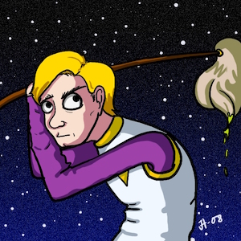

Wilco Fiers
Deque Systems
Auto-WCAG Community Group
Accessibility is in the eye of the beholder
Live in Utrecht, Netherlands
Deque Systems, USA
Play D&D, Kingdom of Kalamar
An accessibility story
Paladin of Semantic HTML
CSS Warrior
JS Wizard
Bard of Visual Design
The town has been corrupted with negative energy, and the only thing that can stop this is the elixir of accessibility.
The Accessibility Beholder
Guardian of the tome WCAG 2.0
"Satisfy my needs, and I will grant you the elixor of accessibility."
The giant eye commands
"Add titles to your 'Read more' links at once!!"
The first eye commands.
"Change that 'Start here' link to a <button>!!"
The second eye commands
"Wrap those 'Address' texts in <h2> Elements!"
The third eye commands
"Add a role="link" to that that 'Start here' button!!"
The first eye commands.
"Change the alt of the logo to 'Homepage Bigcorp'!!"
the second eye commands.
"Change the text of those 'Read more' links!!"
The third eye commands.
"Change that alt back to 'Logo Bigcorp'!!"
The first eye commands
"Change that <h2> on the address back to a strong"
The second eye commands
"Replace that <button role="link"> with a real link"
The third eye commands
Defeated, the party returns to their home town.
"Accessibility is impossible" they announce.
And so the negative force of inaccessibility grew.
Sound familiar?
We all use WCAG
But we don't agree on what it means
Is this a WCAG violation?
Would you recommend it?
<h1>Welcome to Kalamar</h1>
<h3>The kingdom of prosperity</h3>
Is this a WCAG violation?
Would you recommend it?
<header>...</header>
<nav>...</nav>
<main>...</main>
<aside>...</aside>
<footer>...</footer>
Is this a WCAG violation?
Would you recommend it?
<span role="radio" tabindex="0">Dungeon</span>
<span role="radio" tabindex="0">Dragon</span>
Is this a WCAG violation?
Would you recommend it?
<button aria-checked="true">
I vow to cause no inaccessibility
</button>
Is this a WCAG violation?
Would you recommend it?
<strong><p>
Important!</strong> ...
</p>
No keyboard traps
Form fields have labels
Use landmarks
Don't skip heading levels
No keyboard traps
Form fields have labels
Use landmarks
Don't skip heading levels
AccessibilityNL Handbook
Drempelvrij
Webrichtlijnen Expert Groep
Deque Way
Axe-core
Wave
QuailJS
Tenon
FAE
| Axe-core | Tenon | WAVE |
|---|---|---|
| 1.1.1 | 1.1.1 | 3.3.2 |
| 3.3.2 | 2.4.3 | |
| 4.1.1 | 4.1.1 | |
| 4.1.2 | 4.1.1 | |
| 7 errors | 8 errors | 2 errors |
Ask 10 accessibility experts,
and you'll get 11 answers.
20% - 50% (in volume)
Check for alternatives
image alt, aria-label, video <caption>
Check relations:
form field labels, longdesc, aria-owns
Measure color contrast
Parsing
Required accessibility features:
lang, title, bypass blocks
Table headers
Validate ARIA compliance
Zoom / resize restrictions
Auto-refresh
Language detection
Image recognition / OCR
Test for events (onfocus, onchange, etc.)
Compare between pages
Look at contrast with background images
Identify decorative images
Detect keyboard traps
Test templates
ìt('opens a dialog', function () {
myButton.activate();
expect(myDialog.state).toBe('open');
expect(myDialog.elm.getAttribute('role'))
.toBe('dialog');
// Check focus moved
expect(document.activeElement)
.toBe(myDialog.elm);
});
Reduce confusion
Improve developer trust
Lower remediation efforts
Separate our opinion
from our test method.
Standardize test descriptions
Compare different test methods
Bring together commonalities
Tease out our differences
Accessibility Conformance Testing
Describe how we test,
in a way that is:
Consistent
Understandable
WCAG or other
And where possible:
Part of the WCAG Working Group,
Tasked to develop:
Common format for rules
Accuracy test for rules
WCAG Rules repository
Usable by tools and in QA
Adjust over time, understand assistive technologies
Common output format
Tested for accuracy
2017: Draft ACT Framework
2018: Test implementation of rules
2019: Public rule repository
Techniques are for developers,
what rules will be for testers.
Don't require WCAG Expertise
Change as technologies do
Non-exhaustive
Write rules, not tools.
Write rules to test WCAG
Monthly review meetings
Open to anyone
---
rule_id: SC3-1-1-html
name: Primary language of page
test_mode: automatic
criteria:
- 3.1.1 # Language of Page (Level A)
authors:
- Annika Nietzio
## Description
This test checks that the primary language of the web content can be programmatically determined.
## Test procedure
### Selector
Select the `html` element.
### Step 1
If `lang` attribute exists:
L1 = value of `lang` attribute.
If neither `lang` nor `xml:lang` are specified, return Failed-1
Else, continue with Step2.
### Step 2
Compare L1 to the list of all valid languages.
If L1 is not on the list, return Failed-2
Else, return Passed-1
Axe-core
SiteImprove
European Union (EIII)
w3.org/community/auto-wcag/
Go to "Join this group"
@wilcofiers
github.com/wilcofiers